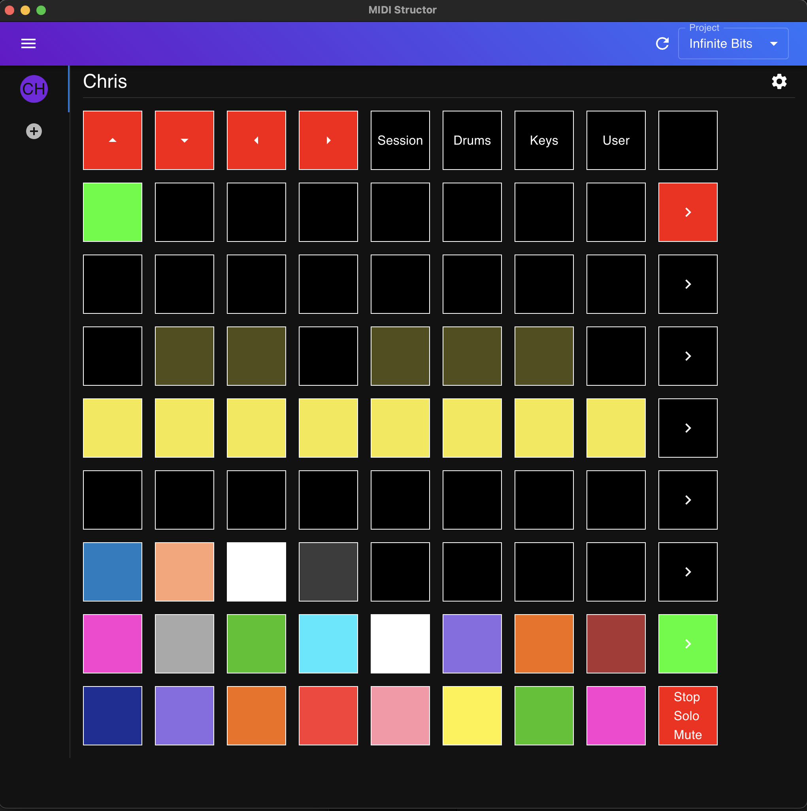

MIDI Structor turns your controller into a live performance command center. Sync with Ableton Live and configure every pad, button, and knob — visually, in real time, even mid-performance.
Apple Silicon · free & open source · installation notes

Stop memorizing MIDI mappings. See your controller on screen, shape it to your set, and let it follow your project.
MIDI Structor mirrors your hardware as an interactive grid. Click any pad to set its color, label, and behavior — launch a clip, jump to a cue, arm a track, stop / solo / mute — and watch your controller light up instantly.
No export, no re-flash, no restart. Tweak your layout at soundcheck, or in the middle of a song.
A Max for Live device streams your project into MIDI Structor — tracks, clips, cues, tempo, time signature, and transport state, updated on every beat.
Play, stop, record, jump to any cue, toggle the metronome and loop — straight from your pads, with your arrangement following along bar by bar.
First-class support for the Novation Launchpad Mini MK3, plus a fully customizable on-screen controller you can build from widgets — beats, tempo, track status, and more.
Add the MIDI Structor device to your Ableton Live set. It handles syncing your project out to the app.
Open MIDI Structor, pick your MIDI device, and your project's tracks, clips, and cues appear automatically.
Lay out pads for the songs in your set, assign colors and actions, and take the stage.
MIDI Structor is free and open source under the MIT license. Grab the macOS app, or try it right in your browser.
macOS Gatekeeper may flag the unsigned app — here's the quick fix.